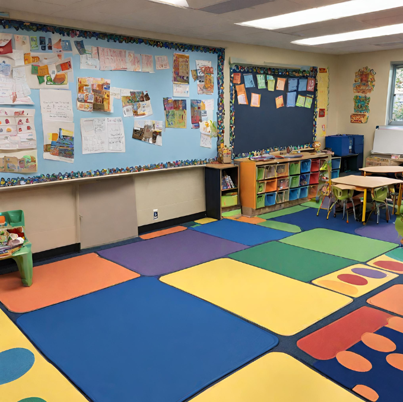

LUCKY DUCKS DAYCARE

Welcome to Lucky Ducks Daycare: Where Every Child Flourishes
At Lucky Ducks, we believe that every child is a unique individual with unlimited potential waiting to be unlocked. Nestled in the heart of Pinelands, our daycare offers a nurturing environment where children aged 0-4 can learn, grow, and thrive.
Our Approach: Montessori Education
At Lucky Ducks Daycare, we are proud to embrace the Montessori method of education. Developed by Dr. Maria Montessori, this approach is centered around the idea that children learn best when they are actively engaged in their environment. Our classrooms are
carefully prepared to encourage exploration, independence, and a lifelong love for learning.
What Sets Us Apart:
Child-Centric Environment: Our curriculum is tailored to meet the needs and interests of each child, allowing them to progress at their own pace.
Hands-On Learning: We provide a wide range of hands-on activities and materials that promote sensory exploration, critical thinking, and problem-solving skills.
Experienced Educators: Our dedicated team of educators are trained in the Montessori method and are passionate about creating a supportive learning environment for every child.
Focus on Independence: Through practical life activities and self-directed learning opportunities, we empower children to develop independence, confidence, and a strong sense of self.
Holistic Development: We recognize the importance of nurturing the whole child—mind and body. Our curriculum incorporates music, art, movement, and outdoor play to promote holistic development.
Strong Community Connections: We believe that collaboration between parents, teachers, and the community is essential for a child’s success. We foster open communication and encourage family involvement in our programs. We have an app for communication with parents - QuackChat.
Our Programs:
Daily Schedule: Our classes run from 8am to 3pm, and your child will feel like they are playing all day long, while learning important skills.
Aftercare Program: For those parents who find it difficult to match the 8am-3pm routine, we offer aftercare from 6am till 6pm, and the children attending daycare participate in special projects on their current interests.
Schedule a Visit
We invite you to schedule a tour of our facility and see firsthand what makes Lucky Ducks Daycare a special place for your child to learn and grow. Contact us today to learn more and reserve your spot!